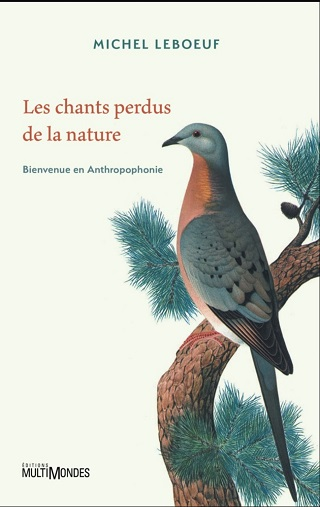
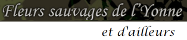

| https://fleursauvageyonne.github.io/ | |
| 
et d'ailleurs | |

|
| Hier 7 décembre
c'était traditionnellement la fête du
patron des apiculteurs qui nous évoque
Ambrosia artemisiifolia L., 1753,
cette plante qui ne correspond vraiment plus à son nom d'origine grecque ἀμϐροσία ! | |
| Bienvenue ►
Welcome / Bienvenidos / Välkommen / Benvenuto
добро пожаловать / مَرْحَبا / Chào mừng
いらっしゃいませ / 欢迎
pարի գալուստ
 | |
| Nommé FLeurs SauVages de l'Yonne et d'ailleurs, en abrégé FLSVY et d'ailleurs, initialement icaunais c'est-à-dire de l'Yonne (un département français dont le chef-lieu est Auxerre) | |
|  | |
| cet herbier a été imaginé en 2005 par Claude Richard, botaniste amateur et randonneur, pour trouver, sans perte de temps le nom latin ou français d'une fleur (une illusion sans doute quand on pense, entre autres, aux 83 synonymes de Dactylis glomerata), bien avant que n'apparaisse Botascopia et sans les moyens humains et financiers d'un tel projet. | |
| Son menu est accessible en cliquant sur l'icone  quelle que soit la page consultée et il a été conçu pour que les botanistes amateurs débutants et curieux puissent découvrir une fleur après l'avoir reconnue rapidement grâce à sa couleur, même imprécise, en cliquant sur une pastille colorée quelle que soit la page consultée et il a été conçu pour que les botanistes amateurs débutants et curieux puissent découvrir une fleur après l'avoir reconnue rapidement grâce à sa couleur, même imprécise, en cliquant sur une pastille colorée | |
|
| |
| dans une forêt par exemple, un écosystème si COMPLEXE dans lequel les arbres sont désormais totalement comparés aux hommes malgré- leur organogenèse continue si différente de celle s'effectuant durant l'embryogenèse humaine, la formation de nos organes commençant à la 5e semaine et se terminant à la 8e semaine avec la mise en place de tous les systèmes de l'adulte que nous deviendrons peut-être physiquement et mentalement
- et leur intelligence, si différente elle aussi de la nôtre avec ses composantes cognitive et émotionnelle en passe d'être surpassées par l'IA, puisqu'elles ont une sensibilité à la lumière que nous n'avons pas.
Comme nous le montre leJardin botanique de Vauville dans la Manche les plantes sont capables de déployer des systèmes de négociation, d'adaptation et de défense performants contre leurs agresseurs (plantes parasites ou compétitrices, virus et microbes pathogènes, insectes ravageurs) tout en continuant à nous donner leurs fruits, même venant d'ailleurs, comme ceux de Mangifera indica ou de Vaccinum myrtillus, et leurs fleurs pas toujours visibles comme celles de Tilia cordata cachées derrière leurs bractées, mais souvent apaisantes bien que certes parfois... allegisantes comme celles des ambroisies, ou toxiques pour nous enseigner la prudence ! | |
|  La Paix est Une Fleur La Paix est Une Fleur | |
| L'est-elle encore en 2025 quand, au détriment des fleurs et des fleuristes d'ailleurs, c'est l'ignorance, l'oubli et le profit qui sont cultivés ? | |
| Les graines oubliées, 19 juillet 2025, LouLibre | |
| 
Erysimum cheiri (L.) Crantz, 1769,
la giroflée des murailles | |
| Giroflé, girofla - Rosa Holt (1935) | |
| Qu'étaient devenues les Graines de Paix
en 2024 ? En restera-t-il en 2025 ? | |
| Et que vont devenir ces graines
que Paris sème en AVRIL ? |
| La vue et l'ouïe, ces deux sens valorisés par la culture médiévale parce qu'ils « fonctionnent » de loin, seraient-ils en voie de disparition ? L'épidémie mondiale de myopie s'accompagnerait-elle d'une épidémie mondiale de surdité, raisons pour lesquelles la Nature est désormais condamnée à s'effacer et même à disparaître, Anthropophonie oblige ? | |
|  | |
| Pour vagabonder virtuellement avec

n'hésitez pas
Entrez ► | |
| ►  ► ►  | |
| Conception/maintenance informatiques
Annick Jani
Mise à jour : DÉCEMBRE 2025
 2005 à 2025 2005 à 2025 | |
}
//-->